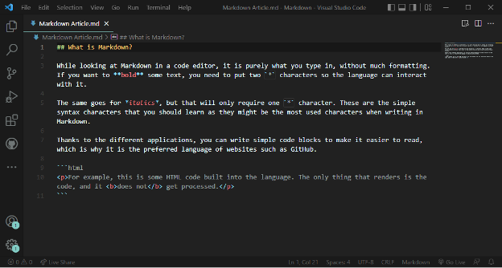

What is Markdown?
By John Channell
Markdown is a Markup language, which may seem confusing from the name of the language. Like HTML, Markdown is a language used to better format information for the general consumer.
A few reasons why Markdown is important in the grand scheme of professional writing is the ability to post information to website applications such as WordPress. For the coding, websites such as GitHub will use Markdown as the general file language to brief the users on what exactly they are looking at. Including more information, this article will also have a small tutorial so you can familiarize yourself with the Markdown language.
The most common editor for the Markdown language is known as the What You See Is What You Get (WYSIWYG). This is used by websites such as WordPress and is a handy tool for looking to get content out quickly. Alongside WordPress, many websites such as Reddit or Discord will also use Markdown, or a generalized version of it, to help users get their point across. Coding software including Visual Studio Code, Atom, Sublime Text , and even something basic like Notepad or TextEdit can also be used for Markdown. The beauty of Markdown is how simplistic it is to edit things together. It doesn’t take hours upon hours of learning a language.
What do you need to get started with Markdown? Honestly, not much, just some kind of editor and the syntax (keyword) guide. For better seeing and understanding Markdown, Dillinger might be your best choice as it is made precisely for Markdown. For further reading on the Markdown language, the free and open-source reference guide will be your best bet. Head to The Markdown Guide’s website to see more of the entire language.
While looking at Markdown in a code editor, it is purely what you type in, without much formatting. If you want to bold some text, you need to put two * characters so the language can interact with it.
The same goes for italics, but that will only require one * character. These are the simple syntax characters that you should learn as they might be the most used characters when writing in Markdown.
Thanks to the different applications, you can write simple code blocks to make it easier to read, which is why it is the preferred language of websites such as GitHub.
```html
<p>For example, this is some HTML code built into the language. The only thing that
renders is the code, and it <b>does not</b> get processed.</p>
```Within professional writing, learning Markdown can be a beneficial skill. Many publishing websites will most likely still use Markdown or a version of it. Learning it early can put you leaps and bounds above some competition that has not started to delve into the Markdown language.
Next time you’re working on some article, try to convert it to Markdown if you have free time. Learning Markdown is one skill you will not regret learning.